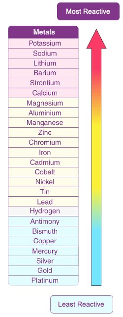
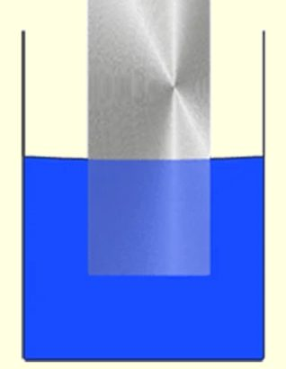
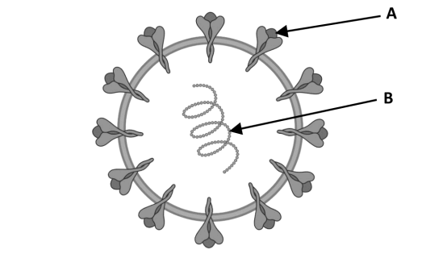
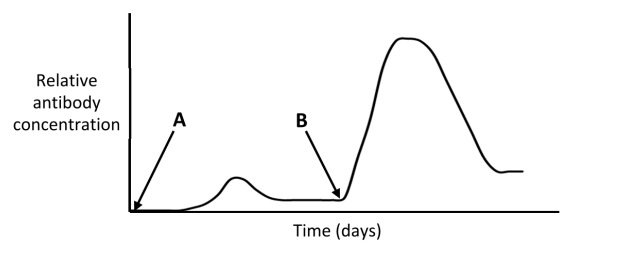
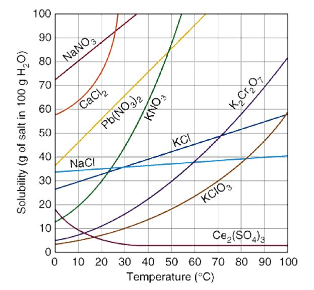
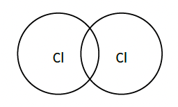

This exam covers Minerals to Metals, Immunology and Water Analysis.

Section A: Multiple choice (25 marks)
Minerals to Metals
Which of the following best describes how ions are formed in a metal–non-metal reaction?
What would be observed if potassium is added to cold water?
Which substance is oxidised in the reaction between iron and copper(II) sulfate?
Fe(s) + CuSO4(aq) → FeSO4(aq) + Cu(s)
Which pair of metals would result in a displacement reaction when the first is added to a solution of the second's salt?
Which of the following is not a typical property of ionic compounds?
Which is the best explanation for why metals conduct electricity?
In the reactivity series, which of these metals is less reactive than iron?
Which is a correct balanced equation for the reaction between calcium and hydrochloric acid?
What happens to the atoms of the more reactive metal in a displacement reaction?
What is the correct pair of half-equations for the reaction Zn(s) + Cu2+(aq) → Zn2+(aq) + Cu(s)?
Immunology
Which of the following reproduces by binary fission?
(Some protozoa also divide by binary fission, but bacteria are the classic example.)
Which mode of transmission involves transfer from an inanimate object?
Foreign molecules on the outside of pathogens are called:
During inflammation, damaged cells release histamines to:
Which process involves engulfing pathogens into a vacuole?
Which structure in bacteria often contains extra genetic material that gives antibiotic resistance?
Plasmids are small extra loops of DNA. They often carry antibiotic-resistance genes and can be passed between bacteria.
A pandemic is defined as:
Which cell type is mainly responsible for antibody production?
Water Analysis
Water molecules stick to each other because of:
Which of the following solutions has the lowest concentration of H+ ions?
Which indicator turns pink at high pH (above about pH 8–10) and is often used in titrations involving weak acids?
Which ion gives a brown precipitate with sodium hydroxide and a green colour when K3Fe(CN)6 is added?
Which salt forms when sulfuric acid reacts with magnesium hydroxide?
What best describes a supersaturated solution?
A non-polar molecule is most likely to dissolve in:
Section B: Short answer (55 marks)
Minerals to Metals (20 marks)
What is an alloy?
A mixture of two or more elements, at least one of which is a metal.
Explain why alloys are generally harder and stronger than pure metals.
The different-sized atoms distort the metal lattice, making it harder for the layers to slide past each other.
Give one example of a common alloy. Name its components and describe one use.
For example: brass is an alloy of copper and zinc (1 mark), used for musical instruments and decorative items (1 mark).
(Other examples: bronze = copper + tin, used for statues and medals; steel = iron + carbon, used in construction; solder = tin + lead, used to join electrical components.)
Explain why metals have high melting points, using the metallic bonding model.
The positive metal ions are held in a lattice by strong electrostatic attraction to the delocalised electrons (the sea of electrons) (1 mark). A lot of energy is needed to overcome these strong metallic bonds (1 mark).
Name one property of metals related to their structure, and explain how metallic bonding causes this property.
For example: metals are good conductors of electricity because the delocalised electrons can move freely through the lattice, carrying charge. (Any other suitable property and explanation, e.g. malleability: layers of ions can slide without breaking the bonds.)
Write the balanced chemical equation, with states, for calcium reacting with water.
Ca(s) + H2O → +
Describe one observation you would expect during this reaction.
Effervescence (bubbling), as hydrogen gas is released.
A student places a strip of each of four metals (iron, silver, zinc and gold) into separate beakers of copper(II) sulfate solution and watches for 10 minutes.

Using the reactivity series, predict which metals will cause a displacement reaction with copper(II) sulfate, and give the products of any reaction.
| Metal | Displacement? | Products (if any) |
|---|---|---|
| Iron | ||
| Silver | none | |
| Zinc | ||
| Gold | none |
Question 5 (8 marks)
A student performs electrolysis on molten sodium chloride using inert electrodes.
Explain why molten sodium chloride, rather than solid sodium chloride, must be used for electrolysis to occur.
In solid sodium chloride, the ions are held in a rigid lattice and cannot move (1 mark). When molten, the ions are free to move and carry the electric current, so electrolysis can occur (1 mark).
- The ions present in molten sodium chloride are and .
- During electrolysis, Na+ ions move towards the and Cl− ions move towards the .
Write the balanced half-equations for the reactions at the cathode and the anode.
Cathode: Na+ + e− → Na (1 mark)
Anode: 2Cl− → Cl2 + 2e− (1 mark)
Explain why sodium metal (rather than hydrogen gas) is produced at the cathode in the electrolysis of molten sodium chloride.
There is no water in molten sodium chloride, so no hydrogen can form. Only sodium ions are available at the cathode, and they are reduced to sodium metal.
Immunology (19 marks)
Question 6 (7 marks)
The first line of defence is innate and non-specific. It has several components that act physically or chemically.
Define the terms "innate" and "non-specific", and explain how they relate to the first line of defence.
- Innate: coded in your genes; you are born with it (1 mark).
- Non-specific: it doesn't target any particular antigen; it targets anything that is non-self (1 mark).
- The first line of defence is always ready to protect the body immediately, without needing to recognise a specific pathogen: it is an automatic response (1 mark).
- For example, the skin is a physical barrier that stops any pathogen from entering, whatever it is (1 mark).
Describe how one physical and one chemical component of the first line of defence works.
Physical (1 mark for one): intact skin is a barrier that stops pathogens entering the body; mucous membranes trap pathogens, and cilia move them out.
Chemical (1 mark for one): stomach acid (HCl) kills pathogens in food and drink; lysozyme, an enzyme in tears and saliva, breaks down bacterial cell walls.
Explain one other non-specific immune response that can occur if the first line of defence is breached.
Any one: phagocytes engulf and digest pathogens; inflammation, where histamines make blood vessels dilate, bringing immune cells to the site; fever, where the body's temperature set point rises, killing pathogens or slowing their reproduction.
Question 7 (7 marks)
The diagram shows the structure of a virus such as the one that causes COVID-19.

Explain why viruses can be considered non-living.
They do not show all the characteristics of life; they need a host cell to make copies of themselves.
Identify the parts labelled A and B.
Label A:
Label B:
Describe one way in which viruses can spread from person to person.
Any one: direct contact with bodily fluids; airborne droplets (one person sneezes droplets containing the virus and another person breathes them in); vectors, such as mosquitoes carrying the virus from one person's blood to another's.
Other than the COVID-19 virus, name one other virus that causes disease in humans.
For example: influenza (flu) virus, HIV, measles virus, chickenpox virus.
Explain two measures that could be taken to control the spread of such viruses.
Any two: PPE (wearing gloves and masks for protection); isolating or quarantining infected people; border controls to limit travel; vaccination.
Question 8 (5 marks)
The graph shows a person's antibody concentration after they receive a vaccination for virus A (time A) and after they are later infected with virus A (time B).

Compare the type of immunity given by vaccination with the type of immunity produced by direct exposure to a pathogen.
Vaccination gives artificial active immunity; direct exposure gives natural active immunity (1 mark for both).
Difference: with vaccination, the antigen is introduced by injection, whereas with direct exposure it is encountered naturally, e.g. by breathing in droplets (1 mark).
Using the graph, compare antibody production after the vaccination with antibody production after direct exposure to the pathogen.
The vaccination produces fewer antibodies than the later exposure (1 mark). Antibody production is slower after the vaccination, and much quicker after the second exposure (1 mark).
Suggest a reason for your answer to part b.
The vaccination was the first exposure to virus A, so there were no memory cells and the antibodies had to be made from scratch. At the second exposure, many memory B cells were ready to produce antibodies very quickly.
Water Analysis (16 marks)
Complete the table. (Type formulas with ordinary numbers.)
| Name of chemical | Chemical formula |
|---|---|
| Magnesium hydroxide | |
| Potassium nitrate | |
| Ammonium chloride | |
| Iron(III) oxide | |
| Copper(II) carbonate | |
| Silver nitrate |
Using chemical formulas, complete and balance the equations. (States are not needed.)
Acid + metal → metal salt + hydrogen gas: HCl + Mg → +
Acid + metal hydrogen carbonate → metal salt + water + carbon dioxide: HCl + NaHCO3 → + +
Use the data booklet to decide whether each salt is soluble or insoluble.
| Compound | Soluble or insoluble? |
|---|---|
| Potassium hydroxide | |
| Ammonium carbonate | |
| Lead(II) sulfate | |
| Iron(III) hydroxide | |
| Aluminium phosphate |
Question 12 (4 marks)
The solubility of several salts is shown below.

Estimate the temperature at which potassium dichromate (K2Cr2O7) and potassium chloride (KCl) have the same solubility.
Why can solubility (in water) only be shown for temperatures from 0 °C to 100 °C?
Water is only a liquid between 0 °C and 100 °C.
100 g of KClO3 is dissolved in 300 mL of pure water at 70 °C. At 70 °C, 30 g dissolves in 100 mL, so g can dissolve in 300 mL. The solution is .
A saturated solution of potassium dichromate in 50 g of water was prepared at 90 °C, then slowly cooled to 50 °C. What is the maximum mass of crystals that forms?
At 90 °C about 70 g dissolves per 100 g of water, so 35 g in 50 g. At 50 °C about 30 g per 100 g, so 15 g in 50 g. Mass of crystals = 35 − 15 = 20 g.
Chlorine gas has the formula Cl2. Each chlorine atom has the electron configuration 2, 8, 7. Using only the valence (outer shell) electrons, describe (or draw on paper) a dot-and-cross diagram showing how a covalent bond forms between the two chlorine atoms.
Two overlapping circles, each labelled Cl. Each atom has 7 outer electrons (one set drawn as dots, the other as crosses). One dot and one cross sit in the overlap as a shared pair (the covalent bond), so each atom has 8 outer electrons: 6 unshared (3 lone pairs) plus the shared pair.

You have two unlabelled jars of chemicals, which you suspect are calcium carbonate and sodium iodide. Devise a series of simple laboratory tests to identify each jar.
Cation (2 marks): use a flame test. Calcium gives an orange-red flame; sodium gives an orange-yellow flame.
Anion (1 mark for one): add a few drops of HNO3 and AgNO3 to a solution of each; sodium iodide forms a yellow precipitate. OR add HCl to the calcium carbonate and bubble the gas through limewater, which turns cloudy, showing CO2.
(Also: calcium carbonate is insoluble in water, while sodium iodide is soluble.)